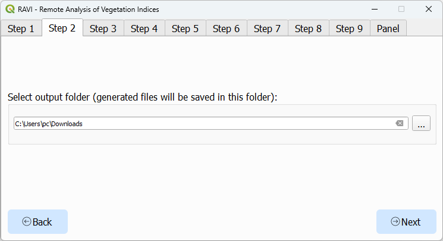
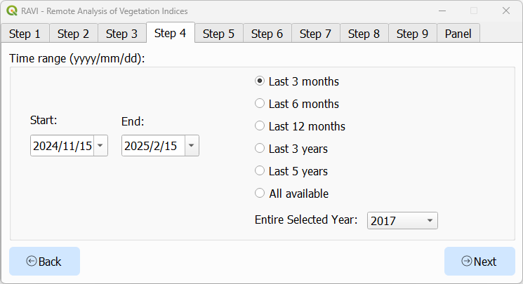
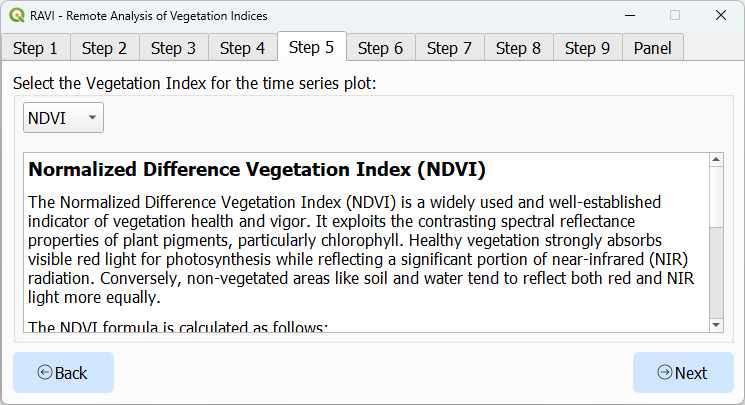
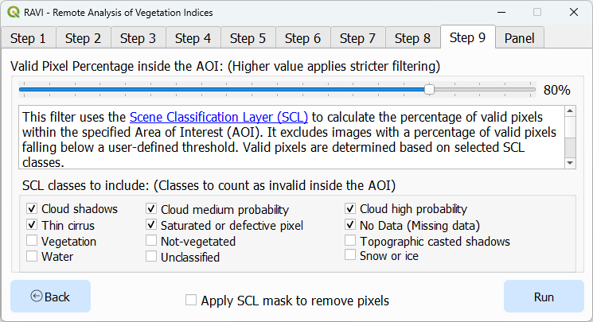
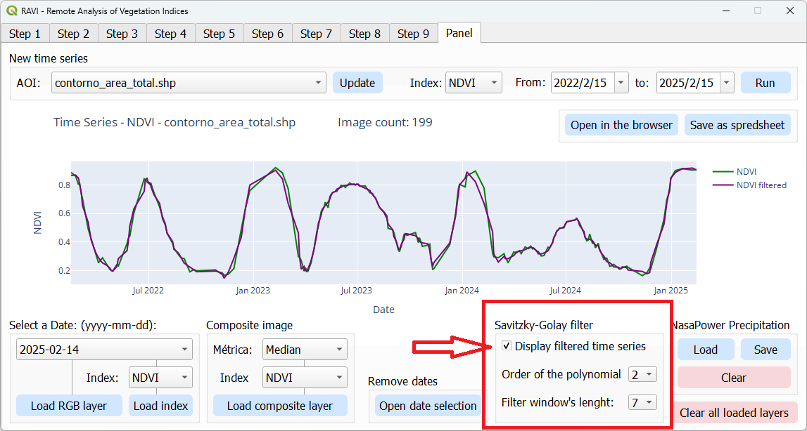
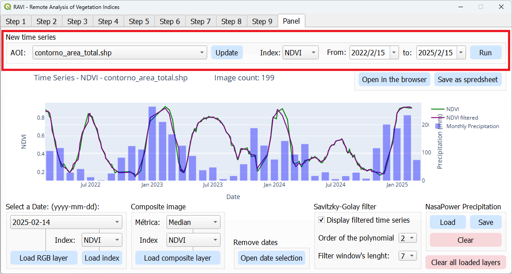

RAVI - Remote Analysis of Vegetation Indices
Overview
RAVI is a QGIS plugin designed to seamlessly integrate with Google Earth Engine (GEE), enabling efficient processing and visualization of geospatial data. Using the Sentinel-2 harmonized surface reflectance catalog, the plugin supports vegetation index calculations and the easy download of multispectral imagery. It is a viable tool for students, researchers, farmers, and GIS professionals working in agriculture, land monitoring, or environmental management.
Key Features
-
Earth Engine Integration
- Easy Authentication: Authenticate with Google Earth Engine to enable plugin functionality.
- Direct Processing: Access, process, and analyze Sentinel-2 imagery without leaving QGIS.
- On-the-Fly Visualization: Visualize processed data as raster layers or interactive plots.
-
Vegetation Index Calculations
- Supported Indices: Compute indices such as NDVI, EVI, SAVI, and GNDVI.
- Customizable Metrics: Aggregate data using mean, max, min, median, amplitude, or standard deviation.
-
Advanced Time Series Analysis
- Generate time series for vegetation indices over a defined Area of Interest (AOI).
- Integrate precipitation data from NASA POWER for cross-variable comparisons.
- Smooth data with Savitzky-Golay filters for enhanced trend analysis.
-
AOI Selection
- AOI Management: Load areas of interest from shapefiles or GeoJSON files.
-
Interactive Visualization
- Charts: Create interactive time series plots using Plotly.
- Raster Styling: Apply predefined color ramps (e.g., RdYlGn) for visual clarity.
- Export Options: Export processed data as GeoTIFFs, CSVs, or styled rasters.
-
Comprehensive Imagery Management
- Date Filtering: Filter individual images by acquisition date.
- Cloud Filtering: Exclude or mask cloudy pixels while preserving usable data.
- Composite Creation: Generate composite images based on user-defined metrics.
Installation
To install RAVI:
- Open QGIS and navigate to the Plugins menu.
- Select Manage and Install Plugins.
- In the plugin repository settings, enable Show also experimental plugins.

- In the "All" tab, search for RAVI, select it, and click Install.
- Ensure that RAVI is checked in the installed plugins list.
- Restart QGIS.
Usage
Step 1: Authentication

- Open the plugin dialog.
- Authenticate with Google Earth Engine using your credentials.
Step 2: Select Output Folder

- Choose the folder where you want to save the output files.
Step 3: Load and Select the Area of Interest (AOI)

- Select an AOI by loading a shapefile or GeoJSON file.
- Ensure the geometry is valid (Polygon or MultiPolygon only).
- Add a Google Maps layer to the QGIS canvas for better visualization and context.
- Use the Build AOI from Canvas Extent button to automatically generate a new AOI based on the current canvas extent.
Step 4: Define Time Range for Imagery Search

- Set a custom time range or select a suggested one.
Step 5: Select Vegetation Index for Time Series Analysis

- Choose the vegetation index you want to analyze from the dropdown menu.
Steps 6 to 9: Additional Filters
Configure the following filters as needed for your analysis:
- Step 6: Imagery Overlap Filter and AOI Buffer Filter Options (

- Step 7: AOI Buffer (

- Step 8: Cloud Pixel Percentage Filter (

- Step 9: Valid Pixel Percentage Filter (
Results Page
The results page includes the following features:
-
Time Series Plot

- Visualize the time series of the selected vegetation index over the defined AOI.
- Hover over the plot to see specific values and dates for detailed analysis.
-
Load RGB Layer (Focus on a Day)

- Load and display an RGB layer for a specific date to analyze the visual appearance of the area.
- All spectral bands are downloaded, and the band numbers correspond to the Sentinel-2 bands as listed in the table below.
Sentinel-2 Band Name QGIS Band Number Wavelength (nm) Spatial Resolution (m) Band 1 (Coastal aerosol) 1 443 60 Band 2 (Blue) 2 490 10 Band 3 (Green) 3 560 10 Band 4 (Red) 4 665 10 Band 5 (Vegetation Red Edge) 5 705 20 Band 6 (Vegetation Red Edge) 6 740 20 Band 7 (Vegetation Red Edge) 7 783 20 Band 8 (NIR) 8 842 10 Band 8A (Vegetation Red Edge) 9 865 20 Band 9 (Water Vapour) 10 945 60 Band 10 (SWIR - Cirrus) 11 1375 60 Band 11 (SWIR) 12 1610 20 Band 12 (SWIR) 13 2190 20 -
Load Index Layer (Focus on a Day)

-
Load Index Layer (Composite Image)

- Generate and display a composite image based on the selected vegetation index and the user-defined metric.
- The composite image will include all images within the current date selection. Use the date selection tool to filter out specific dates.
-
Date Selection Tool

- Use the date selection tool to filter and select specific dates for analysis.
- The tool updates the time series plot accordingly.
-
Savitzky-Golay Filter
- Apply the Savitzky-Golay filter to smooth the time series data for enhanced trend analysis.
- The parameters of the algorithm (such as polynomial order and window length) can be adjusted as needed.
-
Save Options

- Save the time series data in spreadsheet format (CSV).
- To save the time series as an image, open it in the browser to enable the download option.
-
NASA POWER Precipitation

- Add monthly precipitation data from NASA POWER for cross-variable comparisons.
- Save the precipitation data in spreadsheet format (CSV).
-
Quickly Run New Time Series
- Quickly run a new time series analysis by changing the Area of Interest (AOI), Vegetation Index, or time range.
-
Clear All Loaded Layers

- Clear all loaded layers from the layer panel to start a new analysis or declutter the workspace.
Troubleshooting
- Earth Engine Authentication Failed: Ensure you have the necessary requirements as explained in the authentication tab.
- AOI Errors: Verify the AOI file is valid and has a valid CRS (EPSG:4326 preferred).
Reporting Issues
If you encounter any issues or have suggestions for improvements, please open an issue on our GitHub Issues page.
Contribute to the Project
Contributions are welcome! Please visit our GitHub repository to get started.
License
RAVI is licensed under the GNU General Public License v2.0 or later.